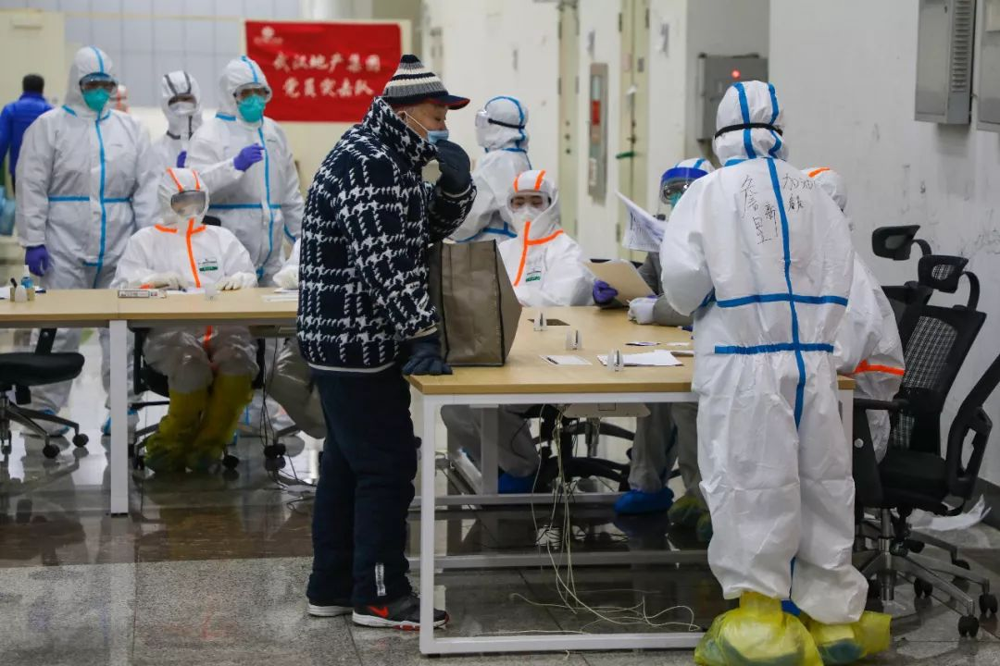
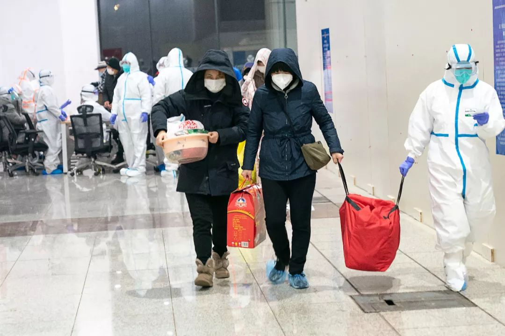
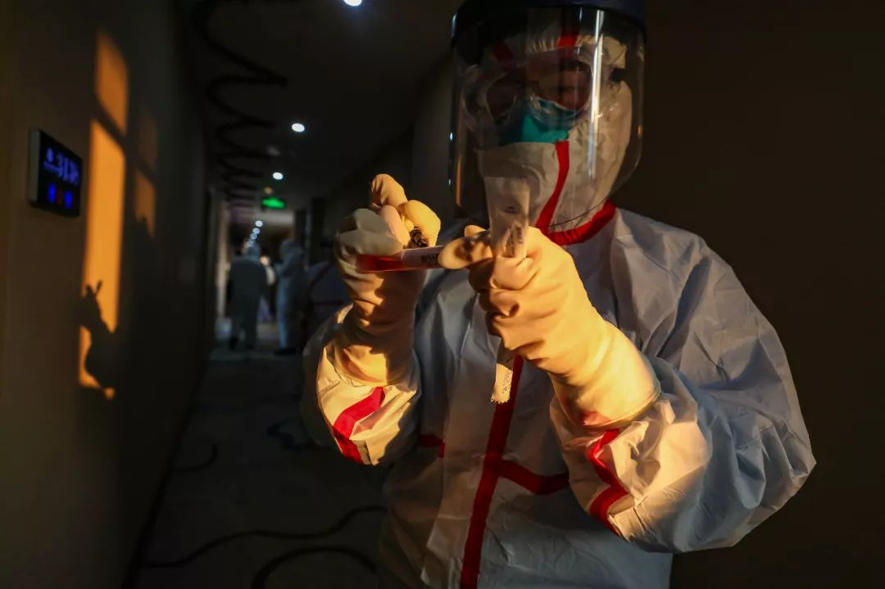

解药|新药和疫苗远水难救近火 专家吁政府长期投入
原文链接 备份链接 【财新网】（记者 邸宁）疫情袭来，公众究竟要对新药和疫苗抱有怎样的期望？新冠疫情持续爬坡，目前尚无治愈药物，由各类机构和企业研发的“候选药物”、“候选疫苗”备受关注，然而，有效药物和疫苗的研发进程，或难以与公众的期望 …

1月26日，中国疾控中心病毒病所表示，该中心已成功分离新冠疫苗病毒，正在筛选种子毒株。种子毒株的筛选是研发疫苗的第一步，全国十几家机构都在基于此争分夺秒地推进新冠疫苗的研发。
接受采访的研究者们表示，新冠疫苗需要跟时间赛跑。即便追不上病毒的速度，新冠疫苗的研发也是永远有必要的，至少可以为下一次的可能疫情做好准备，“人类不能总是被突发传染病追着打。”
记者 | 严岩
从SARS疫苗到新冠疫苗
1月10日，清华大学医学院教授张林琦的实验室拿到了新冠病毒的基因组序列，十几个人就开始连轴转地做实验，他们每个人都很清楚——新冠疫苗的研发，需要跟时间赛跑。实验室制定了严格的计划，哪些实验必须得当天做完，哪些可以稍微等一等，“之前做SARS疫苗的人，现在都去抓紧研究新冠疫苗了”。
这些年来，针对冠状病毒的疫苗研究，张林琦的团队一直在推进。尤其在MERS（中东呼吸综合症冠状病毒）方面，他的团队已经完成了MERS疫苗在动物水平的试验，有效性验证完毕，但后期因为没有更多经费资助就停滞了。

远征 摄
据统计，SARS期间曾有十几家机构做过疫苗研发，但在病毒基因组发布后，研究人员花了20个月的时间才推进到人体临床试验，那时候SARS疫情早已消失，疫苗上市的计划由于临床推进的困难、后续资金的不足，就此搁置。
“真的很遗憾。如果这一次，我们能有SARS疫苗的话，至少在面对新冠的时候能有一些预防。由于SARS和这次的新冠病毒共用一个受体蛋白ACE2，如果SARS疫苗对人体起到保护性的免疫反应，那么就能在一定程度上阻挡新冠的入侵”。张林琦说。目前，在了解新冠病毒和SARS病毒之间的共性部分外，张林琦的团队正在不断验证两者在结构功能上到底有哪些差异。
事实上，就在2月5日，英国政府追加2000万磅（总计4000万磅）用于新冠疫苗和防疫技术的研发。在英国卫生部启动的研究2019-nCov Rapid Response Call申请中明确提到了一个概念——“交叉保护力”（Cross-reactivity），是疫苗效价评价中使用不同亚型病毒进行攻毒保护试验，检测疫苗的保护率。张林琦解释，“英国政府想寻找的就是，现有的对于新冠病毒具有交叉保护力的疫苗候选。这意味着，如果一线医护人员接种SARS疫苗的话，在本次疫情中就可能会降低医护感染”。

远征 摄
“我们都知道，研发疫苗是需要很长时间的，但从我们过去对SARS这类病毒的认知，我可以拍着胸口讲，这个疫苗肯定会成功！但是要尊重自然规律，它需要一步一步的实验。”1月26日，中国疾控中心主任高福表示。
事实上，疫苗的研发主要分为三个部分：种子毒株筛选和试剂、动物模型下交叉保护力试验，以及临床试验的安全性、有效性验证。1月26日，中国疾控中心病毒病所所长许文波说，该中心已启动新型冠状病毒的疫苗研发，目前已经成功分离病毒，正在筛选种子毒株。
筛到毒株后，选择以哪种模式去开发疫苗，也是影响疫苗研制成功的重要因素。张林琦说，“现在各个机构选择了不同的疫苗研发策略，大家在共同开发疫苗过程中相互比较验证，目的是筛选出最有效的疫苗。但疫苗策略到底怎么做，这是资源、能力、技术的综合问题了”。
好消息是，新冠疫苗的研发难度或许并不大。张林琦解释，很多人有每年打流感疫苗的经验，之所以每年都需要打，正是因为流感病毒的突变率极高，它们通过突变来逃过免疫系统的攻击。相比之下，至今看来新冠病毒没有很大的变异。“目前从各地获取的毒株序列来看，有来源于武汉、北京，甚至美国患者的咽拭子等呼吸道样本，所有的毒株基因序列几乎长得一模一样。这也在某种程度上支持了新冠病毒突变率不高的判断。至少，病毒目前为止没有发生基因突变，我们猜测也许比流感疫苗的研发简单一点”。

远征 摄
至于新冠疫苗的研发完成时间，张林琦表示无法预计。“我个人觉得，目前已知的各类报道对疫苗的预估时间都太快了。预防性疫苗的安全性是第一位的，安全性实验至少需要半年的时间才能做完，而有效性评估需要在动物体内做活病毒的攻毒实验，也不是一两个月就能拿到准确的数据的。虽然现在是非常时期，但这些时间是无法跨越的”。
并非可以规律预测的疫苗
“当今最快从一个毒株研制出可以使用的疫苗就是流感疫苗，比如去年流行的毒株，我们预测可以用来预防今年的流感，那就把毒株拿出来做成疫苗给大家接种”。武汉大学病原生物学副教授冯勇此前接受采访时说。
疫苗研发总在和病毒变异的速度竞赛，那么为何人们每年都来得及注射流感疫苗呢？
从某种角度来说，正因为流感是“季节性”的，也就是每年都会来，因而疫苗的研发可以提前准备，并对抗变化莫测的流感病毒。此外，流感疫苗的制备流程中有一套比较完善的预测机制。
本刊采访了从事流感病毒致病机制和疫苗研究多年的李哨鸣，他向本刊解释，“哈尔滨兽医研究所和香港大学两家国家流感病毒流行监测中心每季会采样观察，由他们向国家疾控中心和卫健委报告，并综合世卫组织的报告指南，更新毒株的流行报告，并最终确认主要的流行毒株。所以，流感疫苗从来不是当季的疫苗，是预测后再提前制作。”
那么，新冠疫苗是不是也会有这样一套预测机制呢？

远征 摄
有观点认为，新冠病毒未来可能成为一种流行性疾病，甚至可能会和流感一样。香港大学病理学临床教授约翰·尼科尔斯(John Nicholls)最近就提到，“我的感觉是，新冠将会像非典一样。大概在五个月内，人们基本上得了一场非常严重的感冒”。
但李哨鸣对此持反对意见，“我不认为新冠会演变成为流感样的感染。虽然流感病毒与新冠病毒都是RNA病毒，都通过呼吸道传播，发病早期症状非常相似，临床上容易造成混淆，不好鉴别诊断。但新冠和流感病毒最本质的区别是：目前没有有效的证据显示新冠患者可自愈，并且不会造成肺脏以及其他器官的可恢复性损伤。即使大部分患者属于轻症患者，也不代表他们的肺脏不会留下影像学痕迹。而且，流感病毒主要引发发热，咳嗽、流鼻涕等，临床上少见肺炎以及中重症肺炎；而新冠感染致病主要集中于肺部，大部分病患出现轻度、中重度肺炎”。
李哨鸣更倾向认为，新冠会和SARS那样，在人际间的传播会大概率被消灭。“人不是该病毒的天然宿主，从流行病学角度考虑，该病毒缺乏长期有效流行的基础。虽然媒体上报道出现了几个无症状感染者，但是这些都还有待医学上的证明。以此为依据，认为该病会如流感一样没事，这是错误的”。

远征 摄
正是因为新冠病毒是突发性传染病，也就不适用流感疫苗的预测机制了。“SARS后来在人际间就再没有发生过，这样就没有办法做流行病学监测，而目前获得的毒株信息只能来自于疫情感染中的病人，疫情结束后，很可能几乎监测不到新的毒株信息，也就无法做出对应的疫苗防控策略。”李哨鸣补充。
那么，如果新冠最终和SARS一样，消失得无影无踪，疫苗研发还有必要吗？
不能总被病毒追着打
“每次突发急性传染病，人类都如此被动，追都追不上病毒的传播。如果疫苗能提前研发，就相当于把枪膛上好，等病毒出现后直接歼灭。”张林琦说。比尔·盖茨也在2015年的公开演讲中感慨：“当我还是小孩时，我们最担心的是核战争，但是未来如果有什么东西可以杀掉上千万人，更可能是个高度传染的病毒，而非战争。我们在核威慑上投入巨大资金，但在防范疫情方面却少之又少。”
“其实人类对传染性的疾病理应都有准备，但传染病来的少，又太偶然，趋利为主的企业不会愿意投资去做；而其他相关部门又可能受限于眼界和智慧，也没有提前储备的意识”。张林琦无奈地说。
远征 摄
张林琦多年来一直在倡导政府联合科研机构，针对突发急性传染病建立一个机制。“提前做疫苗的技术储备。比如，有些机构疫苗的研发已经完成了验证疫苗安全性的Ⅰ期临床试验，进行到了Ⅱ期临床，这一次或许就可以直接应用在疫情防控中去。为了测试疫苗的安全性和有效性，疫苗的Ⅰ期临床试验是小规模在健康人身上做；预防性疫苗的Ⅱ期临床试验一般是在高危人群中开展，需要有疫情的存在才能验证疫苗的有效性；Ⅲ期临床试验一般是需要在大规模人群（包括高危人群和健康人群）中开展，进一步验证疫苗的有效性，这部分研究工作也需要在有疫情的情况下才能开展，疫情一结束就意味着没有感染者了，也就无法检测疫苗的有效性了”。
这一倡议，也能在国际公共组织“流行病防范创新联盟”（CEPI）中找到相对应的理念。此前，英国政府将2000万英镑捐赠至该机构。此外盖茨基金会拿出6000万美元资金用于此次新冠病毒的疫苗、治疗等，支持对象中就有CEPI。“其实中国现阶段疫苗的生产能力完全没问题，但对于预防突发的传染病，有时候不是技术问题，而是智慧。如果临床做完Ⅰ期临床试验的疫苗项目，国家将其作为公共项目做应急的技术储备，一旦需要的时候立即推进到Ⅱ期临床试验，疫苗研发会更有效”。张林琦说。

远征 摄
一位不愿具名的业内人士告诉本刊，“美国有两方面力量做这个事情。一个是美国卫生研究院，他们对于各种传染病都会做研究，能制备疫苗的，基本都会有技术储备，但不一定生产。另一个是大型生物药企，基于市场利益驱动，会有选择性的投入资源生产储备。有一点很重要，疫苗在美国是公益领域，政府会投入很多钱来买单，企业一点顾虑也没有。而在国内，至少在科研上，受制于重大传染病的法律约束，一些烈性传染病只能被少数有资质的科研单位垄断，国内产学研开放的程度导致一些研究最终止步于实验室。各级疾控中心除了承担本级的传染病防控宣传外，还把控了疫苗的资源”。
发生在埃博拉病毒身上的故事可以视作一个预警。理查德·普雷斯顿在描写1967年至1993年埃博拉病毒缘起的著作《血疫》中曾说，“我们不能再等到疫情爆发后才开始应对，而是事先做好准备。艾滋病病毒、埃博拉以及其他高危病毒的出现，似乎是人类侵犯了以前未受干扰的环境，消灭了病毒的储存宿主，因此病毒就需要一个新的，那就是人类。埃博拉病毒现在已经退回到了丛林深处，在那里它可以不断学习、变异。相信我，这个怪物还会再回来的，我们需要做好准备。”事实上，埃博拉病毒已于2018年归来，席卷刚果东部地区并持续至今。所幸，2019年11月13日，美国默沙东公司生产的埃博拉疫苗上市，自去年8月以来，当地及邻国已有数十万人接种，有效阻止了疫情进一步蔓延。
（文中李哨鸣为化名）
作者档案

严岩
请内科或血液科大夫，愿意匿名接受采访的，请联系我。添加时烦请自我介绍，谢谢！
26分钟前


三联生活周刊
个人微信：roseisnotred
⊙文章版权归《三联生活周刊》所有，欢迎转发到朋友圈，转载开白请联系后台。未经同意，严禁转载至网站、APP等。
点击图片，一键下单
【武汉现场：抗击新冠肺炎】

*点击阅读原文，进入周刊书店，**购买**【新冠特刊】*
严徽因
免疫力就是战斗力，加油！
微信扫一扫赞赏作者 赞赏
长按二维码向我转账
免疫力就是战斗力，加油！
受苹果公司新规定影响，微信 iOS 版的赞赏功能被关闭，可通过二维码转账支持公众号。
原文链接 备份链接 【财新网】（记者 邸宁）疫情袭来，公众究竟要对新药和疫苗抱有怎样的期望？新冠疫情持续爬坡，目前尚无治愈药物，由各类机构和企业研发的“候选药物”、“候选疫苗”备受关注，然而，有效药物和疫苗的研发进程，或难以与公众的期望 …
原文链接 备份链接 作为中国疾控中心原副主任，杨功焕是坦诚的。多年国际组织和疾控系统工作的经验让她对新冠病毒疫情中萌生的一些问题更加敏感。 她认可武汉“封城”，对中国公共卫生硬实力有信心，但又不满新冠病毒疫情初期的反应迟缓，质疑公共卫生的 …
原文链接 备份链接 市场反馈认为，公共卫生事件对经济的影响有限；在应对疫情的关键时刻，政治和金融市场应对疫情展示出截然不同的态度 文 |《财经》特派记者 金焱 发自华盛顿 编辑 | 苏琦 2月11日，世界卫生组织通过社交媒体推特发布其确定 …
原文链接 备份链接 【财新网】（记者 徐路易）新冠病毒正式得名SARS-CoV-2，它引起的疾病则被正式命名为“COVID-19”。当地时间2月11日，国际病毒分类委员会（ICTV）发表声明，根据系统发育、分类学和已有的经验，冠状病毒研 …
原文链接 备份链接 _ 气溶胶、消化道是否为传播途径在新冠肺炎疫情中牵动人心，在等待医学界给出明确答案时，必要的防护仍是关键，但防护过度则大可不必 _ 文 |《财经》记者 信娜 孙爱民 实习记者 朱贺 **图 | 李斯洋 ** 编辑 | …